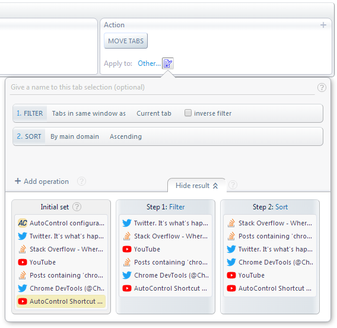
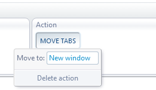
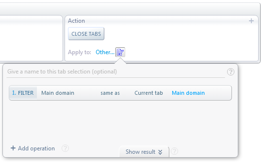

Sort, group & close tabs by domain in Google Chrome
AutoControl allows to perform actions onto a set of tabs according to many selection, filtering and sorting criteria.
Let's see 3 useful cases of applying an action to all open tabs according to their domain.
When you apply an action to more than one tab, you can specify the order the action will be applied to each of those tabs.
We can take advantage of this and use the move tabs action to arrange a number of tabs in any desired order.
Follow this demo for the complete steps:
In the end, the key part is this:
Step 0/0: undefined

The result we see above is the result of the tab selection, not the action. It's the tab selection itself that's ordered by domain.
Then, the move tabs action will move those tabs one by one to the leftmost position in the window.
But, since the action is applied to each tab in the order specified by the tab selection, the result is that the tabs end up in that same order.
As shown below:
Group tabs by domain
In this example, we'll group tabs of the same domain in separate windows. One window for each domain.
The move tabs action can move tabs to any position in the same window, a different window or a new window entirely.
Step 0/0: undefined

We have to specify a tab selection similar to the one used for sorting, except that instead of sorting by domain we'll group by domain. Step 0/0: undefined
As you can see, the final result of the tab selection contains 3 groups of tabs.
The move tabs action can see these groups and will create a new window for each group.
Close domain tabs
In this last example, we'll define an action for closing all tabs with the same domain as the current tab.
For example, if we are viewing a Twitter page, this action will close all Twitter tabs currently open.
We have to apply the close tabs action to the following tab selection:
Step 0/0: undefined

That's all we need. The specified filter will select all tabs whose main domain is the same as the main domain of the current tab.
And then the close tabs action will close all of them regardless of what window those tabs belong to.
 Forum
Install now from theChrome Web Store
Forum
Install now from theChrome Web Store